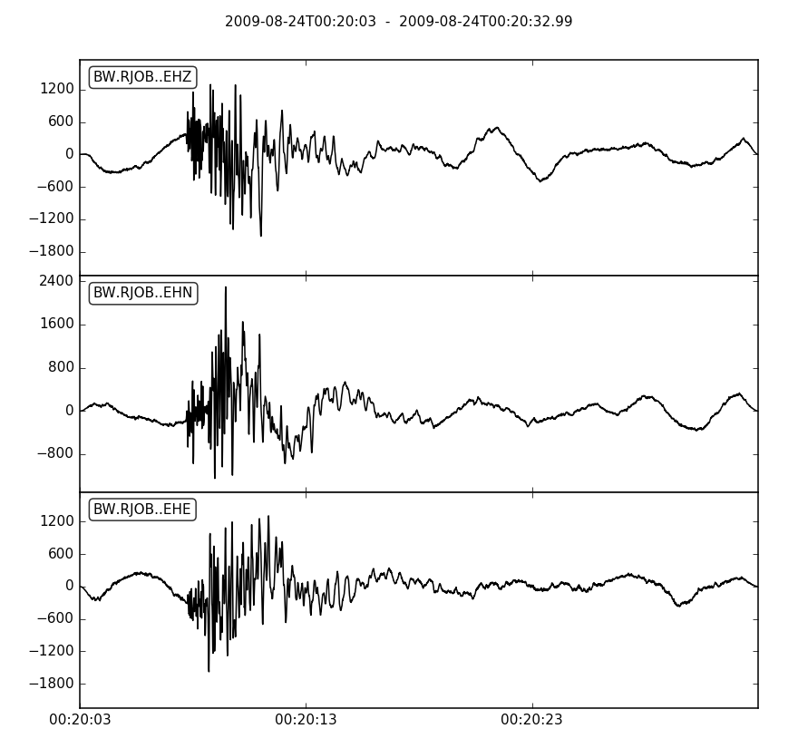

obspy.core.stream.Stream.plot¶
-
Stream.plot(*args, **kwargs)[source]¶ Create a waveform plot of the current ObsPy Stream object.
Parameters: - outfile – Output file string. Also used to automatically
determine the output format. Supported file formats depend on your
matplotlib backend. Most backends support png, pdf, ps, eps and
svg. Defaults to
None. - format – Format of the graph picture. If no format is given the
outfile parameter will be used to try to automatically determine
the output format. If no format is found it defaults to png output.
If no outfile is specified but a format is, than a binary
imagestring will be returned.
Defaults to
None. - starttime – Start time of the graph as a
UTCDateTimeobject. If not set the graph will be plotted from the beginning. Defaults toNone. - endtime – End time of the graph as a
UTCDateTimeobject. If not set the graph will be plotted until the end. Defaults toNone. - fig – Use an existing matplotlib figure instance.
Defaults to
None. - automerge – If automerge is True, Traces with the same id will be
merged.
Defaults to
True. - size – Size tuple in pixel for the output file. This corresponds
to the resolution of the graph for vector formats.
Defaults to
(800, 250)pixel per channel fortype='normal'ortype='relative',(800, 600)fortype='dayplot', and(1000, 600)fortype='section'. - dpi – Dots per inch of the output file. This also affects the
size of most elements in the graph (text, linewidth, …).
Defaults to
100. - color – Color of the graph as a matplotlib color string as
described below. If
type='dayplot'a list/tuple of color strings is expected that will be periodically repeated for each line plotted. Iftype='section'then the values'network','station'or'channel'are also accepted, and traces will be uniquely colored by the given information. Defaults to'black'or to('#B2000F', '#004C12', '#847200', '#0E01FF')fortype='dayplot'. - bgcolor – Background color of the graph.
Defaults to
'white'. - face_color – Face color of the matplotlib canvas.
Defaults to
'white'. - transparent – Make all backgrounds transparent (True/False). This
will override the
bgcolorandface_colorarguments. Defaults toFalse. - number_of_ticks – The number of ticks on the x-axis.
Defaults to
4. - tick_format – The way the time axis is formatted.
Defaults to
'%H:%M:%S'or'%.2f'iftype='relative'. - tick_rotation – Tick rotation in degrees.
Defaults to
0. - handle – Whether or not to return the matplotlib figure instance
after the plot has been created.
Defaults to
False. - method – By default, all traces with more than 400,000 samples
will be plotted with a fast method that cannot be zoomed.
Setting this argument to
'full'will straight up plot the data. This results in a potentially worse performance but the interactive matplotlib view can be used properly. Defaults to ‘fast’. - type – Type may be set to either:
'normal'to produce the standard plot;'dayplot'to create a one-day plot for a single Trace;'relative'to convert all date/time information to a relative scale starting the seismogram at 0 seconds;'section'to plot all seismograms in a single coordinate system shifted according to their distance from a reference point. Defaults to'normal'. - equal_scale – If enabled all plots are equally scaled.
Defaults to
True. - show – If True, show the plot interactively after plotting. This
is ignored if any of
outfile,format,handle, orfigare specified. Defaults toTrue. - draw – If True, the figure canvas is explicitly re-drawn, which
ensures that existing figures are fresh. It makes no difference
for figures that are not yet visible.
Defaults to
True. - block – If True block call to showing plot. Only works if the
active matplotlib backend supports it.
Defaults to
True. - linewidth – Float value in points of the line width.
Defaults to
1.0. - linestyle – Line style.
Defaults to
'-' - grid_color – Color of the grid.
Defaults to
'black'. - grid_linewidth – Float value in points of the grid line width.
Defaults to
0.5. - grid_linestyle – Grid line style.
Defaults to
':'
Dayplot Parameters
The following parameters are only available if
type='dayplot'is set.Parameters: - vertical_scaling_range – Determines how each line is scaled in
its given space. Every line will be centered around its mean value
and then clamped to fit its given space. This argument is the range
in data units that will be used to clamp the data. If the range is
smaller than the actual range, the lines’ data may overshoot to
other lines which is usually a desired effect. Larger ranges will
result in a vertical padding.
If
0, the actual range of the data will be used and no overshooting or additional padding will occur. IfNonethe range will be chosen to be the 99.5-percentile of the actual range - so some values will overshoot. Defaults toNone. - interval – This defines the interval length in minutes for one
line.
Defaults to
15. - time_offset – Only used if
type='dayplot'. The difference between the timezone of the data (specified with the kwargtimezone) and UTC time in hours. Will be displayed in a string. Defaults to the current offset of the system time to UTC time. - timezone – Defines the name of the user defined time scale. Will
be displayed in a string together with the actual offset defined in
the kwarg
time_offset. Defaults to'local time'. - localization_dict –
Enables limited localization of the dayplot through the usage of a dictionary. To change the labels to, e.g. German, use the following:
localization_dict={'time in': 'Zeit in', 'seconds': 'Sekunden', 'minutes': 'Minuten', 'hours': 'Stunden'}
- data_unit – If given, the scale of the data will be drawn on the
right hand side in the form
"%f {data_unit}". The unit is supposed to be a string containing the actual unit of the data. Can be a LaTeX expression if matplotlib has been built with LaTeX support, e.g.,"$\\frac{m}{s}$". Be careful to escape the backslashes, or use r-prefixed strings, e.g.,r"$\\frac{m}{s}$". Defaults toNone, meaning no scale is drawn. - events –
An optional list of events can be drawn on the plot if given. They will be displayed as yellow stars with optional annotations. They are given as a list of dictionaries. Each dictionary at least needs to have a “time” key, containing a UTCDateTime object with the origin time of the event. Furthermore every event can have an optional “text” key which will then be displayed as an annotation. Example:
events=[{"time": UTCDateTime(...), "text": "Event A"}, {...}]
It can also be a
Catalogobject. In this case each event will be annotated with its corresponding Flinn-Engdahl region and the magnitude. Events can also be automatically downloaded with the help of obspy.clients.fdsn. Just pass a dictionary with a “min_magnitude” key, e.g.events={"min_magnitude": 5.5}
Defaults to
[]. - x_labels_size – Size of x labels in points or fontsize.
Defaults to
8. - y_labels_size – Size of y labels in points or fontsize.
Defaults to
8. - title_size – Size of the title in points or fontsize.
Defaults to
10. - subplots_adjust_left – The left side of the subplots of the
figure in fraction of the figure width.
Defaults to
0.12. - subplots_adjust_right – The right side of the subplots of the
figure in fraction of the figure width.
Defaults to
0.88. - subplots_adjust_top – The top side of the subplots of the figure
in fraction of the figure width.
Defaults to
0.95. - subplots_adjust_bottom – The bottom side of the subplots of the
figure in fraction of the figure width.
Defaults to
0.1. - right_vertical_labels – Whether or not to display labels on the
right side of the dayplot.
Defaults to
False. - one_tick_per_line – Whether or not to display one tick per line.
Defaults to
False. - show_y_UTC_label – Whether or not to display the Y UTC vertical
label.
Defaults to
True. - title – The title to display on top of the plot.
Defaults to
self.stream[0].id.
Section Parameters
These parameters are only available if
type='section'is set. To plot a record section the ObsPy headertrace.stats.distancemust be defined in meters (Default). Ortrace.stats.coordinates.latitude&trace.stats.coordinates.longitudemust be set if plotted in azimuthal distances (dist_degree=True) along withev_coord.Parameters: - scale (float, optional) – Scale the traces width with this factor.
Defaults to
1.0. - vred (float, optional) – Perform velocity reduction, in m/s.
- norm_method (str, optional) – Defines how the traces are normalized, either
against each
traceor against the global maximumstream. Defaults totrace. - offset_min (float or None, optional) – Minimum offset in meters to plot. Defaults to minimum offset of all traces.
- offset_max (float or None, optional) – Maximum offset in meters to plot. Defaults to maximum offset of all traces.
- dist_degree (bool, optional) – Plot trace distance in degree from epicenter. If
True, parameterev_coordhas to be defined. Defaults toFalse. - ev_coord (tuple or None, optional) – Event’s coordinates as tuple
(latitude, longitude). - plot_dx (int, optional) – Spacing of ticks on the spatial x-axis.
Either m or degree, depending on
dist_degree. - recordstart (int or float, optional) – Seconds to crop from the beginning.
- recordlength (int or float, optional) – Length of the record section in seconds.
- alpha (float, optional) – Transparency of the traces between 0.0 - 1.0.
Defaults to
0.5. - time_down (bool, optional) – Flip the plot horizontally, time goes down.
Defaults to
False, i.e., time goes up. - reftime (
UTCDateTime, optional) – The reference time to which the time scale will refer. Defaults to the minimum start time of the visible traces. - orientation (str, optional) – The orientation of the time axis, either
'vertical'or'horizontal'. Defaults to'vertical'.
Relative Parameters
The following parameters are only available if
type='relative'is set.Parameters: reftime ( UTCDateTime, optional) – The reference time to which the relative scale will refer. Defaults tostarttime.Color Options
Colors can be specified as defined in the
matplotlib.colorsdocumentation.Short Version: For all color values, you can either use:
- legal HTML color names,
e.g.
'blue', - HTML hex strings, e.g.
'#EE00FF', - pass an string of a R, G, B tuple, where each of the components is a
float value in the range of 0 to 1, e.g.
'(1, 0.25, 0.5)', or - use single letters for the basic built-in colors, such as
'b'(blue),'g'(green),'r'(red),'c'(cyan),'m'(magenta),'y'(yellow),'k'(black),'w'(white).
Example
>>> from obspy import read >>> st = read() >>> st.plot()
(Source code, png, hires.png)
- outfile – Output file string. Also used to automatically
determine the output format. Supported file formats depend on your
matplotlib backend. Most backends support png, pdf, ps, eps and
svg. Defaults to
{kind=link}
{kind=link}